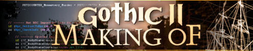

 'How to make a hut for Gothic II' by Sascha
'How to make a hut for Gothic II' by Sascha
|
Hello,
recently members of our sizable fan community have been asking more and more technical questions about the development of Gothic II - they want to know what's going on behind the scenes. So I wrote a 'work-in-progress' article while I created an object.
Enjoy!
|
|
Well, right now my job is to fill gaps in our surface world with mini locations. Among them is this place just in front of a copse, near a burnt-down hut.
According to the story a hunter's camp will have to fill the space, complete with skins and lootable chests.
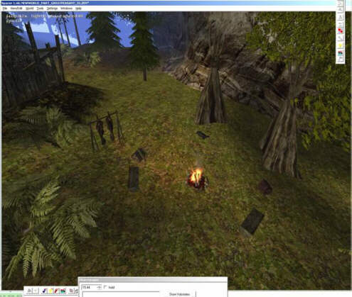
(this is the spot, barely objected)
many of the objects you'll need for such a scene have already been created during development. the chests, skins, camp fire, wooden benches... i had modelled tents as well, but they were inaccessible.
I think an accessible tent is needed to emphasise the scene's camp character. In this tent you'll find the chests and skins.
first, make a sketch of what the tent should look like. If you have the sketch modelling will be much easier because you already know what you want. And what it should look like.
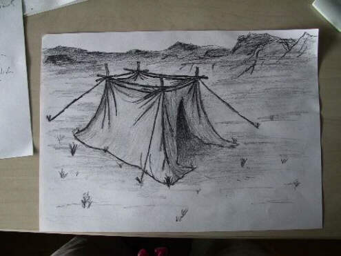
(this is a first draft of said tent)
|
poly by poly - the 3D model
|
as soon as the sketch is done I'll fire up 3DSMAX to model the object. i start with the 'supporting' wooden construction. the base for this is a three-sided cylinder with several grades of height so the wood will look more natural.
the wooden stakes have been stuck a bit deeper into the ground to even out eventual bumps.
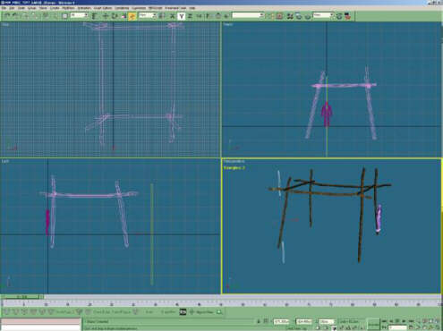
(i added a figure model to show relative size)
| 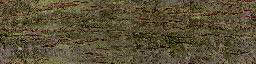 |
at the same time i cover the 'wooden' parts with a fitting texture.
(scaled down here - in reality it's 512x128)
|
as soon as all the wooden parts are done I'll take on creating the ropes. I'll be using a three-sided cylinder for this as well, but without graduations since i want the rope to be taut. here's the texture for it.
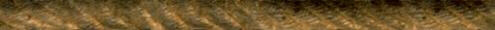
(a rope texture clipping)
this will be mapped to the rope object, the object copied and all copies placed correctly. the wooden stakes at the end of the rope can't be created after all because you never know where the rope will meet the ground when you place the tent. you might create them as separate objects, though, and integrate them into the scene later on.
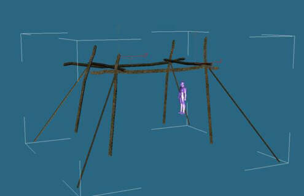
(the hut's skeleton)
I've used many polys already, so I'll have to keep that in mind when modeling the tent canvas. i won't be able to model the natural-looking creases i hinted at in the sketch. i'll have to "simulate" those creases with the help of textures instead, but first i need to finish the mesh.
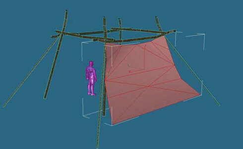
(like in the sketch the canvas is expanding closer to the ground)
first, i'll build the canvas' outside. the opening will be in the front.
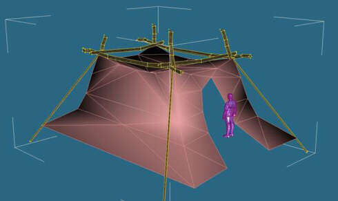
(the finished covering mesh)
now I'm creating the corresponding canvas texture with photoshop and then I'll map it to the mesh.
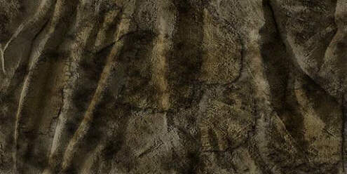
(the texture, scaled down a bit)
and here's a shot of the canvas mapping. you should be careful with the creases. if you're doing something wrong the creases won't look natural anymore.
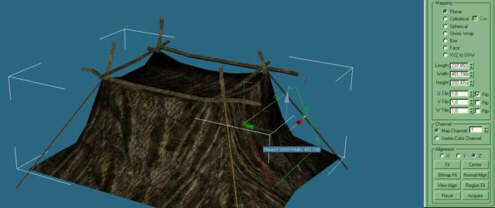
(this is what the textured tent walls look like)
since the 3D model has many small gaps (for example, between the inner wooden construction and the tent wall) there might be collision problems. if things go wrong the player can get stuck in one of the gaps. to prevent this i'll have to create invisible 'protective barriers' to cover the places which might pose a threat for the collision system. the player can't pass the invisible barriers and thus won't get stuck.
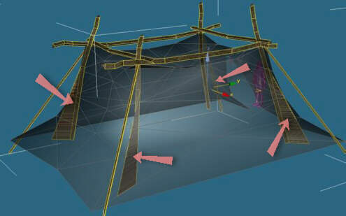
(four invisible barriers, look at the red arrows)
okay, now to lay a few polys over the entrance and add a fringed texture (with alpha channel... for the knowledgeable people) to make the whole thing look even more ethnic. now i'm done with the tent. the modeling took me about half an hour. creating the textures took me 2-3 hours, however (the tent canvas was a real challenge!)... and the tent doesn't even look how I wanted it to. i should have been paying more attention to the texture's behavior once it's been mapped to the mesh. it might have made a better impression then i guess. oh well. should be good enough as it is. there are still other textures waiting to be created ;-).
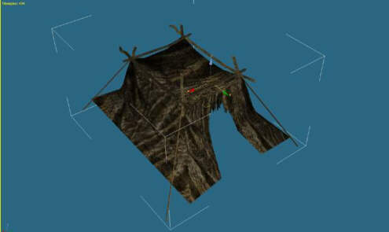
(so, done)
so, after i finished objecting the location (i.e. set the lighting, placed small objects, planted a tree) here's the final result:
(click to enlarge)
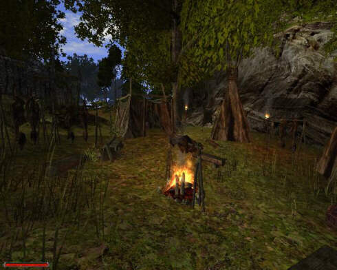
(1. from the player's sight)
i put an object you'll surely know from Gothic I in front of the tent - the canvas above the entry. it makes the scene look even more real. add a few torches, plants, ambient objects, skins and other items, and the scene is done.
i hope you enjoyed the 'work-in-progress' report. i'm afraid it will remain the only one because we're pretty much out of time. but kai will update you on a lot of other stuff.
see you,
sascha henrichs (to the portrait)
piranha bytes
2D-, 3D graphics
|
|
|
- 'making of' archive -
|
|